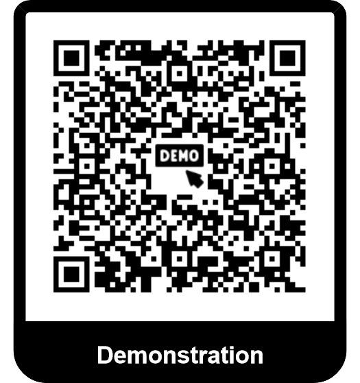

Forces/actions conservatives et énergie potentielle
Contents
3.1.1.2. Forces/actions conservatives et énergie potentielle#
Nous avons vu précédemment que le travail d’une action dépendant a priori du chemin parcouru entre 2 points. Il existe néanmoins une classe de forces où ce n’est plus le cas. Le travail ne dépendra plus que des positions A et B. Ces actions ont en physique un rôle extrêment important au point qu’on va les particulariser: ce sont les actions conservatives.
3.1.1.2.1. Forces/actions conservatives: définition#
Important
Actions ponctuelle conservatives
Il existe des actions dont le travail sur un trajet entre deux points A et B ne dépend que des positions des points A et B mais pas du chemin parcouru entre les deux.
Important
Energie potentielle
Puisque le travail de l’action du point A au point B ne dépend pas du chemin parcouru mais uniquement des positions A et B, il existe une fonction de la seule position notée \(E_p\) dont la variation \(E_p(B) - E_p(A)\) permet de déterminer le travail de l’action de A à B. On appelle cette fonction énergie potentielle et elle est définit de telle sorte que le travail de l’action du point A au point B vaut:
Remarque: On dit que la force dérive d’une énergie potentielle.
Variation infinitésimale de l’énergie potentielle.
L’énergie potentielle est alors une grandeur d’état puisqu’elle s’exprime en fonction du seul état du système à l’instant considéré. Lors d’une transformation, on va donc calculer une variation de l’énergie potentielle. Si la variation est finie, on la notera \(\Delta E_p\), si elle est infinitésimale, on la notera \(dE_p\). Ces notations sont à mettre en rapport avec celle pour l’énergie cinétique: ce sera une généralité pour les grandeurs dites “d’état”, c’est-à-dire qui ne dépendent que de l’état du système à un instant donné et pas de la façon avec laquelle il est arrivé dans cet état.
3.1.1.2.2. Energie potentielle et force#
Important
Relation force et énergie potentielle
L’expression précédennte démontre immédiatement la relation suivante:
La dernière expression permet de déduire de l’énergie potentielle l’expression de la force dans tous les types de repères.
Démonstration
Dans le cadre d’un déplacement infinitésimale \(\overrightarrow{dOM}\), la variation d’énergie potentielle d’une action ponctuelle s’écrit:
Il vient par identification avec la définition du gradient l’expression précédente.
3.1.1.2.3. Forces conservatives usuelles#
Les démonstrations du caractère conservatif sont en ligne.
Méthodes
Il existe deux méthodes de détermination de l’expression d’une énergie potentielle:
si on ne sait pas si l’action dérive d’une énergie potentielle (ou qu’on doit le prouver), alors il faut calculer le travail infinitésimale et le mettre sous la forme d’une différentielle \(\delta W = - d(f(M))\). On idenitifie alors f(M) à l’énergie potentielle (à une constante près). Remarque: on peut aussi calculer la puissance transmise et l’écrire sous la forme: \(P = \frac{\rm{d}}{\rm{dt}}(f(M))\). De la même manière f(M) s’identifie à l’énergie potentielle.
si on sait que l’action dérive d’une énergie potentielle, on peut utiliser l’expression du gradient et intégrer (dans le cadre du programme, uniquement si la force ne dépend que d’une seule coordonnée).
On utilisera ici la première méthode puisque le but est de prouver que les forces ci-après dérivent d’une énergie potentielle.
3.1.1.2.3.1. Energie potentielle de pesanteur#
Important
Cas d’un point matériel
L’action du poids sur un point matériel M dérive d’une énergie potentielle dont l’expression est:
où h est l’altitude et K une constante - on rappelle que l’énergie potentielle est définie à une constant près.
Démonstration
On utilise un système de coordonnées cartésiennes où z est la coordonnée verticale vers le haut (donc h)
\[\begin{align*} \delta W &= -mg \overrightarrow{e_z} \wedge \left(dx \overrightarrow{e_x} + dy \overrightarrow{e_y} + dz \overrightarrow{e_z}\right)\\ &= -mg dz\\ &= -d \left(mgz\right) \end{align*}\]
3.1.1.2.3.2. Force de Lorentz#
Partie magnétique
Sur un point matériel, la partie magnétique de la force de Lorentez ne travaille pas, c’est-à-dire que le travail de cette force est nul (et la puissance aussi).
Démonstration La force magnétique est par définition perpendiculaire à la vitesse, donc la puissance transmise est nulle.
Important
Partie électrique
L’action sur un point matériel du champ électrique indépendant du temps \(\overrightarrow{E}\) dérive d’une énergie potentielle appelée énergie potentielle électrostatique. Elle s’écrit sous la forme \(E_p(M) = qV(M)\) où q est la charge du point matériel et V(M) est le potentiel électrique dépendant du seul champ électrique (et pas du point matériel sur lequel il agit). On a la relation \(\overrightarrow{E} = - \overrightarrow{grad} V\).
Remarque: Le potentiel électrique est celui introduit en électrocinétique. Cette expression ne sera utilisée qu’en fin d’année.
3.1.1.2.3.3. Forces newtoniennes#
Important
Potentiel newtonien Soit un point O de masse \(m_O\) et/ou de charge\(q_O\) agissant sur un point M de masse \(m\) et/ou de charge \(q\). Les forces gravitationnelles et coulombiennes dont les expressions sont de la forme \(\overrightarrow{F} = - \frac{K}{r^2} \overrightarrow{e_r}\)dans un système de coordonnées de sphérique centrée au point O dérivent d’une énergie potentielle appelées respectivement énergie potentielle de gravitation et énergie potentielle électrostatique et dont l’expression est:
Démonstration
Comme dit dans la propriété, on va se placer en coordonnées sphériques centrées au point O.
\[\begin{align*} \delta W &= - \frac{K}{r^2}\overrightarrow{e_r} \wedge \left(dr \overrightarrow{e_r} + r d\theta \overrightarrow{e_\theta} + r \sin\theta d\varphi \overrightarrow{e_\varphi}\right)\\ &= -\frac{K}{r^2} dr\\ &= -d \left(- \frac{K}{r}\right) \end{align*}\]
3.1.1.2.3.4. Actions de rappel#
Important
Action de rappel d’un ressort L’action de rappel d’un ressort dérive d’une énergie potentielle dont l’expression est:
Démonstration
On travaille dans un système de coordonées cartésiennes d’axe Ox le long du ressort et le point O est à l’autre extrémité du ressort tel que\(l = x\). On trouve alors que \(\overrightarrow{u_{ext}} = \overrightarrow{e_x}\) et donc:
\[\begin{align*} \delta W &= -k\left(x - l_0\right) \overrightarrow{e_x} \wedge \left(dx \overrightarrow{e_x} + dy \overrightarrow{e_y} + dz \overrightarrow{e_z}\right)\\ &= -k \left(x - l_0\right) dx\\ &= -d \left(\frac{1}{2} k {\left(x - l_0\right)}^2\right) \end{align*}\]
On retrouve l’expression en remplaçant x par l.